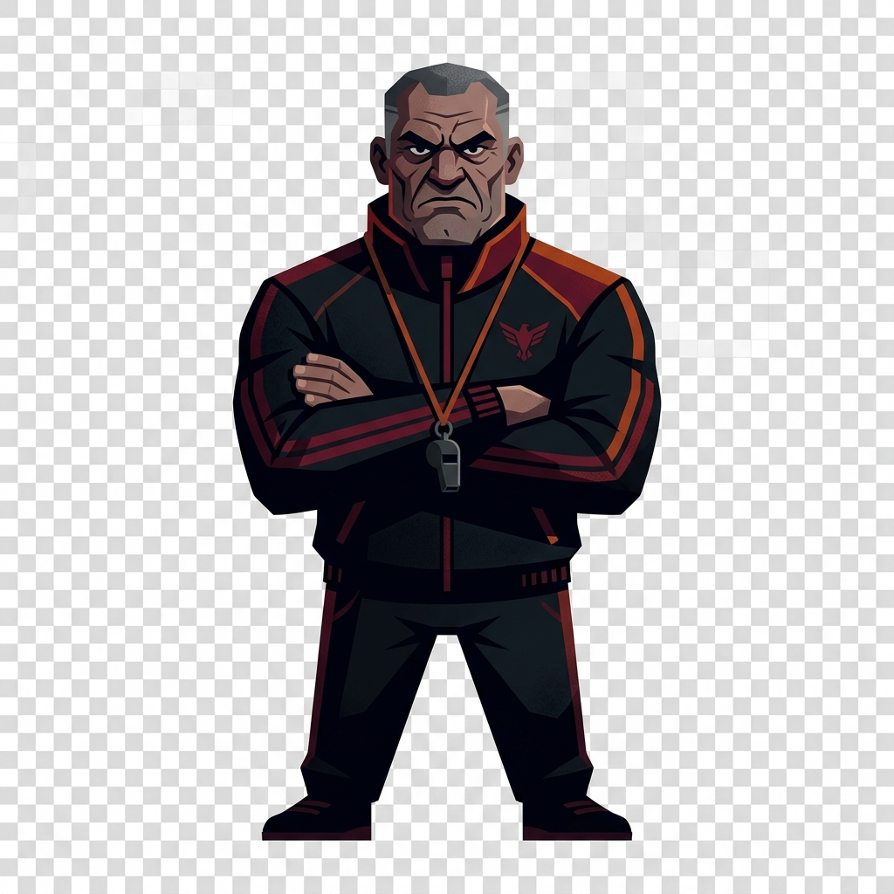

Antirot is the AI coach that doesn't care about your feelings. It tracks your focus, kills your excuses, and makes you do actual work. Built for ADHD brains that need real accountability, not another meditation app.

Built for brains that drift
The problem isn't intelligence. It's attention drift, activation friction, and inconsistent executive regulation. You don't need another app. You need a coach who won't let you rot.
— The Antirot Philosophy
Features
Deterministic timers, behavioral memory, adaptive strategies, and a coach that remembers your excuses.
Start work blocks with a target. End them with honest output reports. Productive minutes vs wasted minutes. No lies.
Normal wake check. Then loud alarm. Then the coach gets disappointed. Hidden time buffers prevent clock-watching anxiety.
Antirot remembers what derails you, what works, your drift patterns, and your best accountability tactics. It learns you.
Calculates sleep debt. Adjusts wake requirements. Calmer tone at night. No anxiety-inducing reminders before bed.
Reinforcement learning picks daily coaching strategies. What worked yesterday gets promoted. What failed gets replaced.
Your goals and identity files are write-protected. Want to change them? Explain yourself first. /override bypasses everything.
Live Coaching
No fluffy affirmations. No "you're doing great!" when you've been on YouTube for 2 hours. Just honest, direct coaching through Telegram or any chat interface.
Read the docs →Setup
Self-hosted on your VPS. Your data stays yours. No cloud. No subscriptions. No excuses.
Set up the OpenClaw gateway on your VPS. One npm install, one systemd service.
Install the Antirot plugin. Configure your workspace directory and alarm commands.
Link your Telegram bot. Start chatting. The coach will onboard you with one question.
Tell the coach your goals. Start sessions. Get held accountable. No more rotting.
Antirot is open source, self-hosted, and free. The only cost is your laziness.